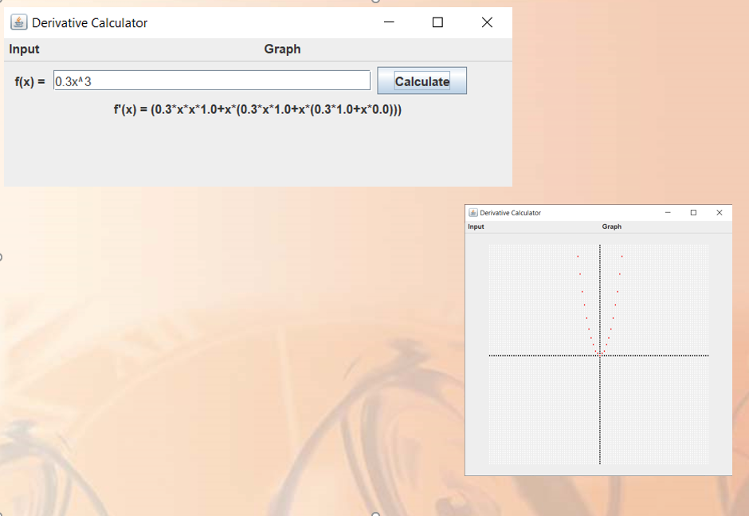

Java Derivative Calculator
This program is a Java application for calculating derivatives. The user types in the function in the input bar, and the program produces the derivative. It is only capable of taking the derivative of polynomials and rational functions. It also doesn't give a very nice-looking answer, although if one simplifies the result, it should always be equal to what a human would produce as the correct answer. The program is also able to generate a graph plot of the derivative function.
I created this program as my final project in my Java Programming class which I took in college. We had free reign to create whatever we wanted, as long as it included visuals/UI and was not just a console program.
Technologies used: Java